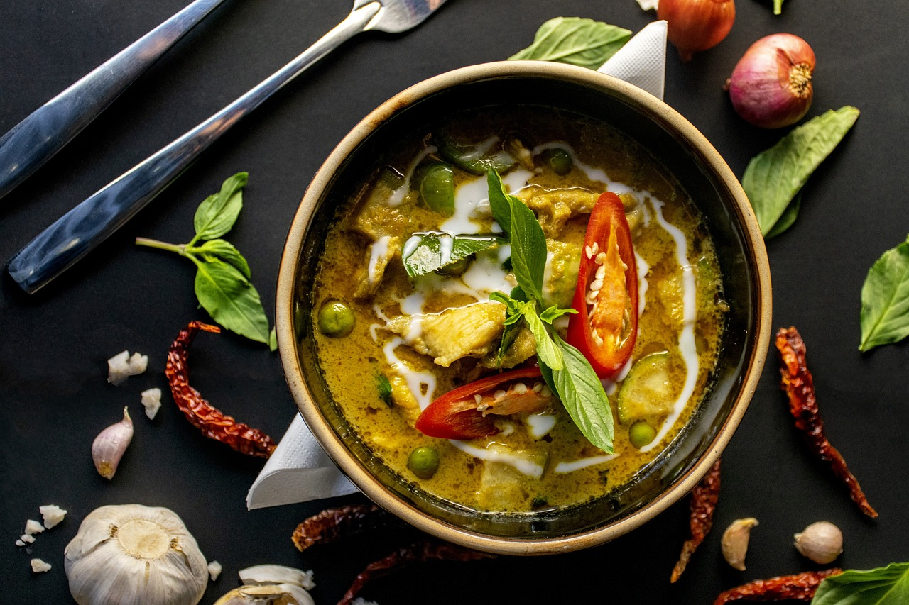
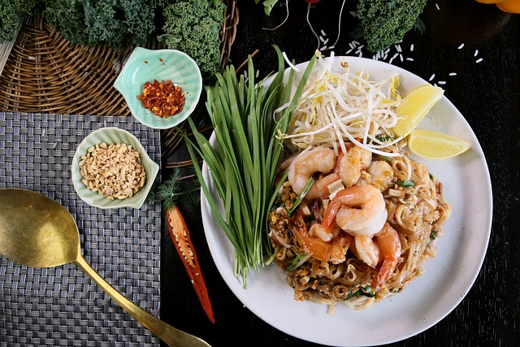

Thai Food



Thai food is celebrated globally for its vibrant flavors, aromatic herbs, and harmonious balance of sweet, sour, salty, and spicy tastes. Renowned dishes include Pad Thai, a stir-fried noodle dish; Tom Yum Goong, a spicy shrimp soup; and Green Curry, a creamy coconut-based curry. Thai cuisine emphasizes fresh ingredients like lemongrass, kaffir lime leaves, galangal, and chilies, creating dishes that are both fragrant and flavorful. Street food is an integral part of the Thai culinary experience, offering a diverse array of affordable and delicious options that reflect the country's rich culinary heritage.